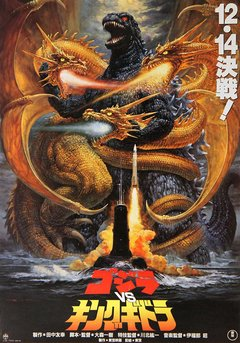

I'm not a movie reviewer. I'm just a Godzilla fan. And I have been a fan for as long as I can remember. One of my earliest memories was watching Godzilla vs the Smog Monster on VHS tape, seeing the baby covered in pollution, and running outside to get some fresh air because child-me was not ready for that. As an internet-addicted youth, I would spend most of my time on the web researching kaiju abilities on Toho Kingdom and debating with folks on Youtube about who would win in hypothetical matchups between different kaijus. I watched Godzilla toy reviews, listened to the monsters' unique roars, and played a whole lot of Godzilla Unleashed. So, here's my opinion:
I believe that Godzilla Minus Zero is the best Godzilla movie ever made!
Things I Like About This Movie In General
Tackles powerful themes. It does a great job of pulling on the heart strings. The main guy has to make difficult decisions: risk his life saving Japan, or stay safe with his wife and daughter despite knowing he's probably the only one skilled and brave enough to take on these giant monsters? If you're a parent, you should bring tissues or a few extra napkins from the concession stand.
Excellent display of pure love. In a world where there are gratuitous sex scenes in every piece of media for literally no reason other than to sell more tickets, there is not a single one in this entire movie. As a matter of fact, nobody even gets a kiss. The most you see is a hug. And yet, it's made clear that these people love each other more than anything in the world.
Teaches the value of hard work. These dudes were working tirelessly, day and night, trying to figure out what Ghidorah's weaknesses were. It was hard work, but worthwhile, and they did it because they knew the kind of impact their efforts would have. They knew they would be making a meaningful difference in the world.
Teaches you to believe in yourself. There's a female meteorologist named Aoyama who is genuinely a prodigy at predicting the weather, but she didn't have faith in her own abilities. One time, she predicted that a terrible typhoon would arrive and ravage a town, but her teammates told her she was wrong, and that the storm wouldn't be nearly as bad as she thinks it will be. Well...turns out, she was exactly right, and the storm ended up killing several people. She feels like it was her fault those people died, because she should have believed in her own competence instead of allowing her colleagues to talk her out of it. Anyway, she goes through a lot of character growth throughout the movie and it's quite inspiring.
Awesome sound effects. The lightning beams. Godzilla's atomic breath. The roars. Ghidorah's gravity beams!
Awesome visuals. If this movie doesn't win another award for Best Visuals Effects like Minus One did, it's rigged. I am was especially impressed with the Hiroshima and New York City scenes, which I elaborate on below.
Genuinely good acting. Espcially the performance of the child actor playing Akiko. It's actually the same girl reprising her role from Minus One!
Scientists portrayed in a positive light. They're not just booksmart folks who sit at desks all day doing nothing while the action hero saves the day. Their research and knowledge provides breakthroughs and insights which enable the cool pilots to take action in the first place!
Things Godzilla Fans Would Appreciate
All of the above applies, of course. I mean, we like good movies too. But if you were anything like me growing up, you loved the monsters, and didn't really give a crap about the humans. Here are a few parts of the movie which appeal to enthusiasts of the series!
Kaiju battles. When Godzilla Minus One came out, I said it had everything a Godzilla movie should have. But I forgot one key component: giant monsters fighting each other. Now this has been rectified!
The word "zero" in the title. Why? This movie is about King Ghidorah, who was featured in a 1970 Godzilla film called Monster Zero
Ghidorah's classic origin story and cry. They kept Ghidorah's cosmic origin from the original movie Ghidrah, the Three-headed Monster where he crash lands on Earth as a meteor. Also, I'm so glad they kept the chirping call.
Iconic pose during the final battle. Did anything seem familiar? Take a look at this movie poster from the 1991 movie!

Staying true to the spirit of the franchise. I mean this in more than one way. Back in the day, Toho quite literally "lost the plot." Godzilla went from being a symbol of nuclear terror to just being a hero who kicks evil monster butt. In this movie, the original warning message remains loud and clear. But secondly, I have to admit, much of the appeal of the franchise actually is the fighting, and fighting certainly is present.
Honorable Mention: The Effects of a Nuclear Explosion
Physics students and those interested in WWII history, particularly the Manhattan Project, will GREATLY appreciate this part.
Incredibly accurate and chilling depiction of the aftermath of the Hiroshima bombing. Especially the part where Murakame has a flashback to it. He walks through the rubble, past many severely wounded and disoriented people, and finds some bodies (presumably his family) burnt completely black. This is really what it looked like and you can verify this yourself by looking up the photographs taken in Hiroshima at this time...very disturbing and sobering.
Completely accurate and realistic depiction of what it would be like to be at ground zero of an atomic detonation. When Murakame goes mad and fantasizes about using Godzilla to destroy New York City, Godzilla shoots a beam through some buildings, and the beam bursts with the force of a nuke.
A bright spherical fireball appears. This is verified to be what happens when a nuke detonates.
The people nearby don't have time to react. They just literally start melting, their skin resembling a marshmallow held over a fire. There is no sound either. This is accurate because heat propagates at the speed of light, much faster than sound, so everything basically burns instantaneously.
I appreciate the director including these scenes in the movie because people usually have a hard time imagining what an atomic bomb going off would look like and what the effects would be. There have been attempts to depict this in the past, but those were in cartoons or visualized with lower-quality 3D graphics. This is, in my opinion, the most visceral and real representation of a nuclear bomb going off that I've ever seen and is why I think this movie should get an award for visual effects.
What Other People Say About The Movie
There are a few common complaints people have. Here's what I have to say about them:
Godzilla doesn't get enough screen time. I agree, but this doesn't influence my opinion of the movie at all. This is probably the number one most common complaint people have about every Godzilla movie ever, lol.
The ending fight scene wasn't long enough. Related to the previous point. I think it's good that the fight scene was short. Think about it, there's only so many things that Godzilla or the other monsters can do. Godzilla can bite, punch, hit with his tail, and shoot his atomic ray. If the fights drag on for too long, you risk:
the scene becoming too repetitive. How many times can a monster bite something before it gets boring?
reducing the perceived power of the attacks. Back in the day, Godzilla would use his laser beam constantly. Since he used it all the time, the beam lost its 'wow' factor. It started to feel kind of weak.
This felt more like a Ghidorah movie than a Godzilla movie. Nothing wrong with that. It does a great job of establishing Ghidorah's character and his origin story, and makes Godzilla's appearance more impactful.
We didn't get to see Ghidorah explode at the end. Fair point. It's probably to ensure that Ghidorah could potentially play a role in a future movie. I personally was fine without seeing that. I thought the beam fight itself was spectacular; it looked like a kamehameha wave clash straight out of Dragon Ball Z.
Akiko and her parents had all of their emotional moments right in front of the orphans. Yeah, I have no defense for this one. Kind of messed up, but the movie is self aware of this. If you recall, near the beginning, the dad tells her not to act so excited when she sees him.
I also hear some mixed opinions about whether or not the parents should have abandoned Akiko at the end. I think it would be grittier and more emotionally profound if they went ahead and abandoned her.
In Conclusion
Man, when Shin Godzilla came out a decade ago, I was really happy to hear that Toho was back for a new era. I thought it was alright, thought the evolution concept was good, but wasn't a huge fan. Then, when Godzilla Minus One came out a few years ago, I literally said to myself that it was the best Godzilla movie ever made. It was everything a fan would want. It was the movie that fans had been hoping and waiting for for so long. As I walked into the theater for Minus Zero, I was thinking to myself, "Please don't suck. I don't think they can do better than Minus One, but I hope it's not one of those cash-grab sequels." Well, here I am, feeling like Toho has outdone themselves. Somehow, I am once again leaving the theater feeling like I've seen the best Godzilla movie ever made. It's never been a better time to be a Godzilla fan!